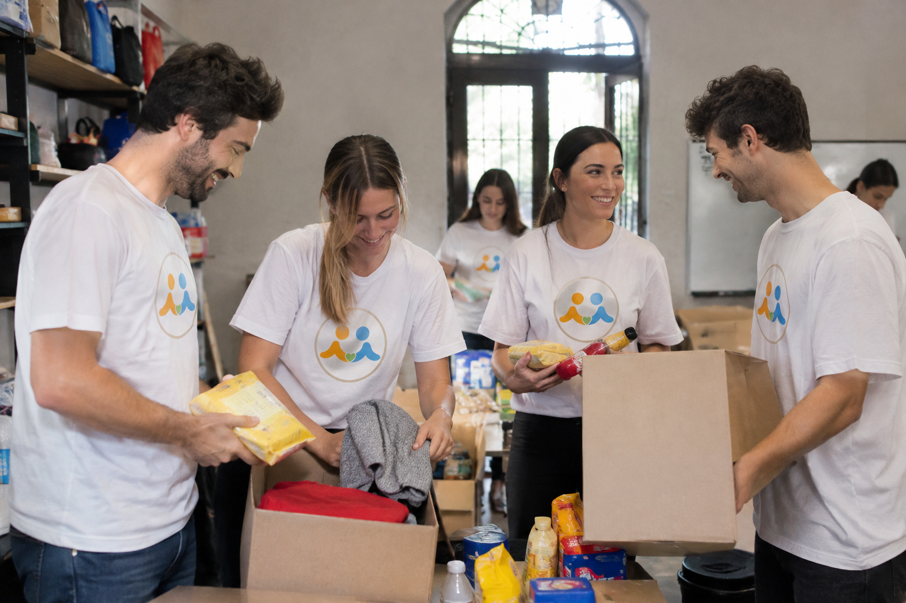
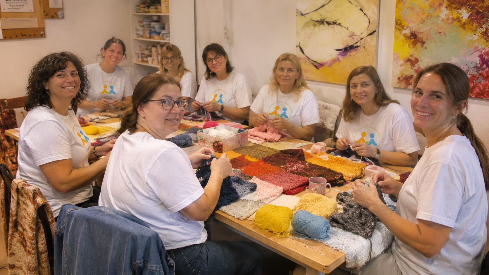
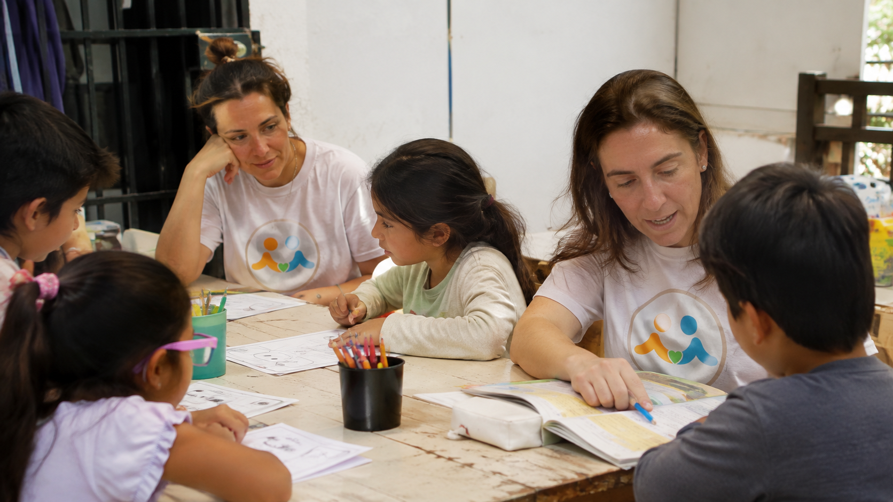

En Puentes trabajamos para acercarnos a las personas que más lo necesitan y acompañarlas con lo que está a nuestro alcance. Detrás de cada propuesta hay
voluntarios, familias y vecinos de la comunidad que ponen tiempo, ideas y mucho cariño.
Todas las semanas hacemos recorridas para visitar a personas
en situación de calle, y también compartimos espacios con niños y niñas, como el apoyo escolar.
A lo largo del año sumamos campañas especiales,
como la Navidad o el abrigo en invierno. Conocé a continuación algunas de las que hicimos posible entre todos.

Con la llegada de las fiestas, quisimos que las personas que visitamos pudieran vivir una Navidad distinta. Gracias al aporte de la comunidad,
preparamos 50 cajas navideñas con productos típicos de estas fechas: pan dulce, turrones, budines, galletitas, atún, paté, pionono, garrapiñadas,
duraznos en almíbar y gaseosas.
Además, algunas familias organizaron una colecta de juguetes con la que armamos regalos y tarjetas
personalizadas. Así, 45 niños recibieron un regalo de Navidad.
Gracias a quienes donaron, a las familias y a todos los que hacen Puentes.

Cuando llega el invierno, las noches se vuelven muy difíciles para quienes viven en situación de calle. Por eso queremos agradecer al grupo de las
Cuadraditas de la parroquia La Asunción de la Virgen, que tejió cerca de 200 mantas con mucho amor para las personas que visitamos los lunes.
Fueron de gran ayuda para afrontar las noches frías de invierno, y cada una llegó con algo más que abrigo: el cariño de quienes las hicieron.
¡Gracias, Cuadraditas, por ser parte de Puentes!

La Puentelita es un grupo de apoyo escolar brindado por voluntarias de Puentes. Es un espacio dedicado y pensado para acompañar en distintos
desafíos a los hijos de las familias que conocemos a través de nuestras recorridas.
Todos los martes, los chicos y las chicas se acercan a
la parroquia para compartir una merienda. Después los ayudamos con las tareas del colegio o realizamos distintas actividades lúdicas para
estimular y reforzar habilidades.
Porque aprender también puede ser un lindo momento para compartir.